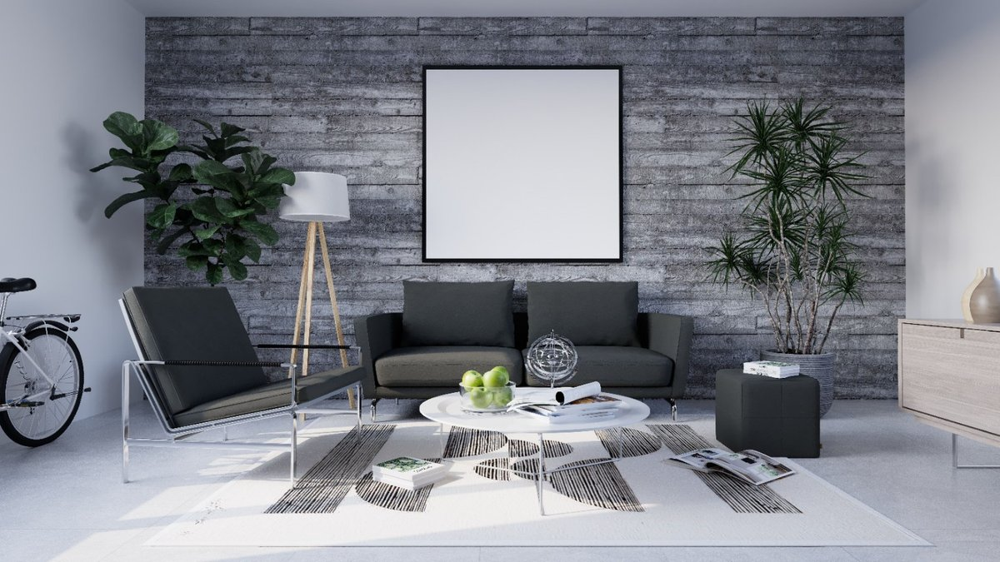

Design spaces that tell a story

B3 Concept is a South African design practice providing interior and graphic design services for residential, commercial and retail spaces. The organisation describes its approach as client-centred, creative and focused on functional, timeless interiors.
What We Do
- Space planning and interior staging
- Custom joinery and furniture design
- Project management
- Consulting and needs analysis
- Remodels and new construction
- 3D rendering presentations
- Corporate identity design
- Website design
- Property development
Our Design Process
- Concept: Understand requirements and develop a creative design concept.
- Design: Develop the approved concept into technical design, materials and finishes.
- Implementation: Coordinate the project through professional project management.
Service Areas
B3 Concept identifies Cape Town, Johannesburg and Durban as South African service areas.